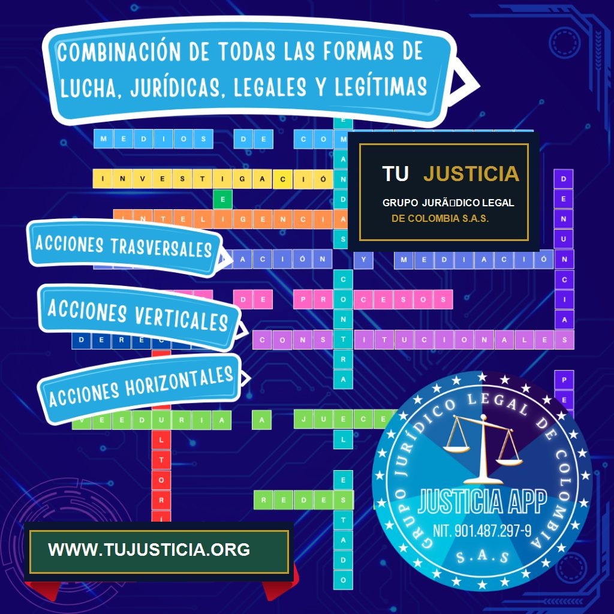
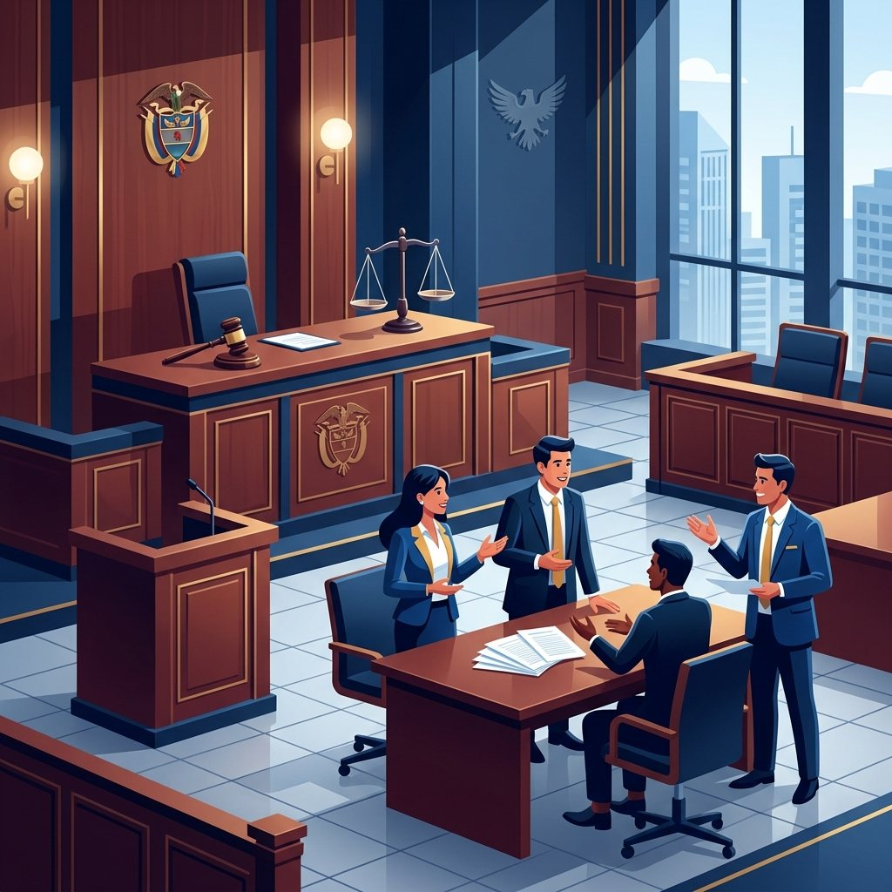

En el Grupo Jurídico Legal de Colombia SAS, en Alianza con la firma Tu Justicia, entendemos que cada caso es único y requiere una estrategia jurídica personalizada. Nuestra misión es proporcionar a nuestros clientes una defensa robusta y efectiva, combinando diversas formas de lucha jurídica legítimas y legales para asegurar los mejores resultados posibles.
A continuación, presentamos en detalle las estrategias legales que proponemos y ejecutamos para la protección integral de nuestros clientes:
1. Litigio y Resolución Judicial
El litigio es una de las formas más tradicionales y contundentes de resolver disputas legales. Este proceso implica llevar un caso ante la Rama Judicial para que un juez decida el resultado con base en derecho. Nuestra experiencia en litigio nos permite representar a nuestros clientes de manera eficaz en una amplia variedad de asuntos, desde complejas disputas comerciales, casos de responsabilidad civil contractual y extracontractual, demandas laborales, denuncias penales ante la Fiscalía, demandas contencioso-administrativas contra el Estado, acciones de tutela y divorcios.

2. Mediación y Métodos Alternativos de Solución de Conflictos (MASC)
La mediación es un proceso de resolución de conflictos en el que un tercero neutral (el mediador) ayuda a las partes a llegar a un acuerdo mutuamente aceptable y con plenos efectos de cosa juzgada. Esta forma de lucha jurídica es particularmente útil en casos donde las partes buscan mantener una relación comercial, laboral o familiar constructiva en el futuro. Es voluntaria, confidencial, mucho más rápida y considerablemente menos costosa que acudir a un juicio civil ordinario.
3. Arbitraje y Tribunales de Decisión Rápida
El arbitraje es un proceso en el que las partes en disputa acuerdan someter su conflicto a uno o varios árbitros independientes, cuya decisión (denominada laudo arbitral) es vinculante y equivalente a una sentencia judicial. A diferencia del litigio tradicional, el arbitraje ofrece mayor flexibilidad en reglas de procedimiento y plazos estrictos de finalización. En nuestra firma contamos con sólida experiencia en arbitraje comercial nacional, permitiéndonos defender litigios de gran cuantía de manera técnica y rápida.
4. Negociación y Transacciones Estratégicas
La negociación directa es la base fundamental para resolver disputas de forma óptima sin la intervención de jueces o árbitros. Mediante el uso de técnicas modernas de persuasión legal y análisis de riesgo, nuestros abogados representan a los clientes para llegar a contratos de transacción. Esto extingue las obligaciones en conflicto y garantiza soluciones seguras en tiempos reducidos, logrando que el cliente minimice pérdidas y proteja su caja.
5. Consultoría Jurídica Preventiva (Compliance e Inteligencia Legal)
Evitar el conflicto antes de que nazca es la inversión jurídica más rentable. Diseñamos esquemas de blindaje preventivo mediante auditorías de cumplimiento normativo, redacción estratégica de contratos y minutas a la medida, y la estructuración de políticas operativas corporativas. Esto minimiza el riesgo de que la empresa sea demandada por proveedores, clientes o empleados, manteniendo el patrimonio a salvo de contingencias legales imprevistas.
6. Defensa Penal y Acompañamiento en Investigaciones
En casos donde nuestros clientes enfrentan investigaciones o acusaciones de carácter penal ante la Fiscalía General de la Nación, estructuramos una defensa técnica e inquebrantable. Acompañamos desde las audiencias preliminares de control de garantías, aportando elementos materiales probatorios, peritajes técnicos y análisis forenses para desvirtuar la responsabilidad penal o proteger la libertad del procesado en todas las instancias de juzgamiento.
7. Acciones Colectivas (Acciones Populares y de Grupo)
Las acciones populares y de grupo permiten que múltiples personas afectadas por un mismo hecho dañoso (por ejemplo, cláusulas abusivas masivas en servicios financieros, daños ambientales, o fallas en infraestructura de constructoras) unan sus esfuerzos en una sola demanda. Representamos a colectivos de ciudadanos para equilibrar la balanza frente a grandes corporaciones y entidades públicas, logrando indemnizaciones colectivas ejemplares.
8. Derechos Constitucionales y Defensa de Derechos Fundamentales
Especialistas en la interposición de mecanismos constitucionales en Colombia. Defendemos los derechos fundamentales al debido proceso, la salud, el mínimo vital, y la igualdad de nuestros clientes por medio de la Acción de Tutela, incidentes de desacato, acciones populares, e interposición de recursos ante el Sistema Interamericano de Derechos Humanos. Garantizamos que el poder judicial de inmediato restablezca el imperio de la Constitución.
9. Resolución de Conflictos Laborales y Conciliaciones
Los conflictos obrero-patronales pueden paralizar una empresa o arruinar el sustento de un trabajador. Estructuramos procesos de negociación laboral colectiva y de conciliación ante inspectores de trabajo. Si no hay acuerdo, representamos de forma contundente en juicios laborales ordinarios para reclamar prestaciones, indemnizaciones por despido injustificado, fuero de maternidad o salud, y el correcto pago de la seguridad social.
10. Derecho Administrativo y Acciones contra el Estado
El derecho administrativo regula la relación de los ciudadanos y empresas frente a las alcaldías, superintendencias y ministerios. Asesoramos en la obtención de licencias, impugnación de actos administrativos sancionatorios dictados por entidades de control, defensa ante cobros coactivos injustificados, y la estructuración de demandas de reparación directa y de nulidad y restablecimiento del derecho.
11. Acciones ante los Medios de Comunicación y Reputación Corporativa
En casos de alto impacto público, la batalla no solo se libra en los despachos judiciales, sino también ante la opinión pública. Diseñamos estrategias de comunicación jurídica, redacción de comunicados de prensa institucionales, y gestión de crisis ante redes de información masiva para evitar la afectación de la honra, el buen nombre o el valor de la marca del cliente. Aseguramos que la perspectiva técnica del caso sea escuchada con objetividad por los medios.
12. Veeduría y Saneamiento de las Actuaciones de los Administradores de Justicia
La veeduría permanente garantiza la transparencia judicial. Vigilamos estrechamente cada providencia de los juzgados. Ante irregularidades o dilaciones injustificadas (mora judicial), interponemos quejas disciplinarias ante la Comisión Nacional de Disciplina Judicial, solicitudes de vigilancia administrativa ante los Consejos de la Judicatura, o recusaciones, saneando el proceso para evitar la vulneración del debido proceso.
¿Necesita una Estrategia Legal Efectiva para su Caso?
Permita que un equipo de abogados expertos estructure la combinación de formas de lucha jurídica necesarias para ganar su proceso. Hable de forma directa con la abogada Jessica Lorena Ramírez a través de WhatsApp.
Asesoría Gratuita por WhatsAppVE A NUESTRO MEJOR LITIGIO DE ÉXITO:
Conozca cómo logramos defender la legitimidad y estabilidad institucional en el sonado caso de defensa de la alcaldía de Mikhail Krasnov.
Ver Caso de Éxito